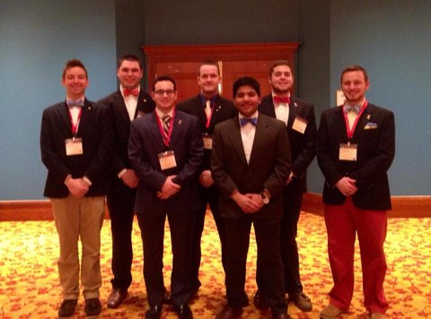

Sigma Phi Epsilon

Nickname: SigEp
President: Brandon Lee | (270) 929-4524 | Brandon.Lee24@uky.edu
Recruitment: Josh Rice | (502) 689-5806 | joshuarrice@yahoo.com
36 Members
GPA: 3.1
Scholarship Offer information:
The Balanced Man Scholarship (BMS) is a celebration of the Balanced Man ideals
that Sigma Phi Epsilon has been founded upon, the presence of a Sound Mind in
a Sound Body. In the fall of 2012 our Chapter awarded $2,000 in scholarship
money, a contribution we look to continue. Because this award is not purely
based on one metric, we strongly encourage all young men who are entering our
University to apply.
The application process is simple and straightforward:
* Fill out the online application at uksigep.com.
* Scholarship applicants will be called over the summer to have an interview
in their home if possible.
* All remaining applicants will be called for an interview in the first
couple weeks of school.
* All applicants will be invited to a banquette dinner the first weekend
of school.
* Balanced Man Scholarship winners will be announced after all applicants
have been interviewed, or August 31st at the latest.
Major community service, chapter and philanthropy events:
Habitat For Humanity, Kick it For The Kids - Kickball tournament for YouthAids
Knockout Cancer - Dodgeball tournament to raise money for Cancer Research
Recent Awards: Academic Excellence for Outgoing Seniors
National History:
Sigma Phi Epsilon was founded in 1901 on the campus of Richmond College (now
called the University of Richmond) in Richmond, Va. The story of its founding
by 12 determined men set the stage for the growth and success of one of the
country premier fraternal organizations. Around 15,000 SigEp undergraduates
are on 240 college campuses each year. They are among the nearly 300,000
lifetime brothers who have joined since 1901. SigEp was founded with the
cardinal principles of Virtue, Diligence and Brotherly Love. Our mission is
Building Balanced Men, which is achieved through a commitment to Sound Mind
and Sound Body
Chapter History:
The University of Kentucky Chapter was founded fall semester of 2011 by Mike
Fruchtman and Jeff Horan, recruiting over 30 men. Our Mission Statement: "To
exemplify the values of our fraternity: Virtue, Diligence, and Brotherly Love
in our community resulting in the development of Balanced Men. A Balanced Man
is a man who leads by example for the good of our fraternity, university, and
community - further, we want to create an environment that fosters lifetime
relationships. Through service to our community and enhancing individual's
strengths, we will create a brotherhood of true gentleman - We Will Be Different."
National and Local Founding Date:
November 1, 1901
September 1, 2011
Organizational Vision: Building Balanced Men - Sound Mind, Sound Body
Chapter Colors: Red, Purple, Gold
Symbols: Founder's Badge, Balanced Man Symbol